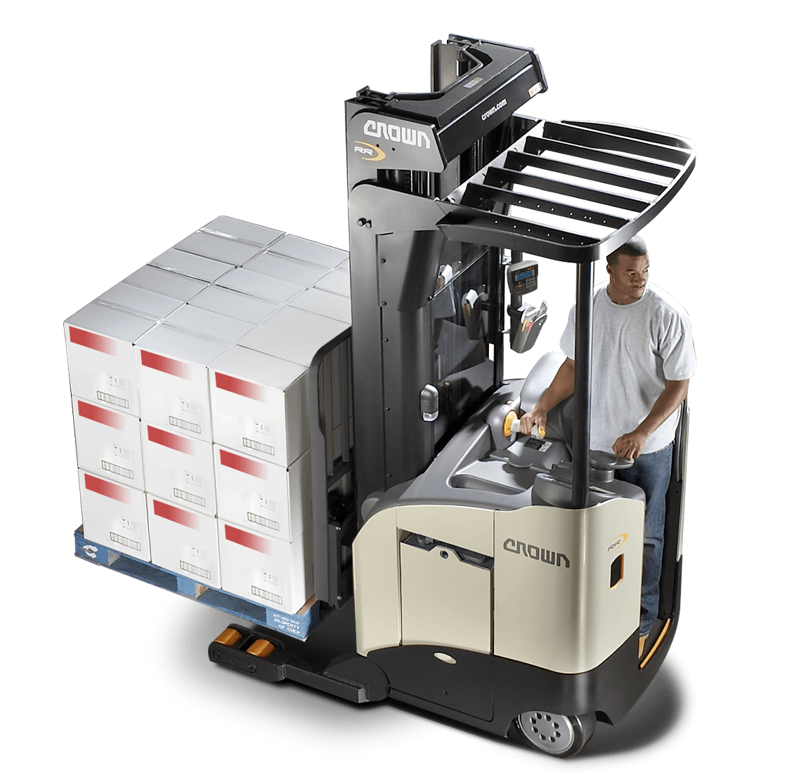

Serie RR/RD
Una cosa es diseñar un equipo retráctil con la potencia necesaria para rendir, y otra muy diferente es crear un equipo retráctil con unos niveles de inteligencia y tecnología que lo hagan destacar.
Pero eso es precisamente lo que hace la serie RR/RD de Crown: unir potencia e inteligencia en un mismo equipo.